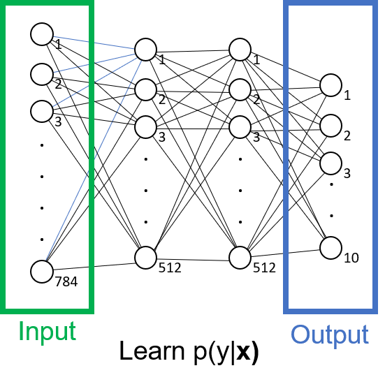

import torch
from torch import nn
# DataLoader is an iterable around DataSet, which stores samples and their corresponding labels.
from torch.utils.data import DataLoader
from torchvision import datasets
from torchvision.transforms import ToTensor
training_data = datasets.FashionMNIST(
root="data", # root directory
train=True,
download=True,
transform=ToTensor()
)
test_data = datasets.FashionMNIST(
root="data",
train=False,
download=True,
transform=ToTensor()
)Introduction to Neural Networks
Neural networks are a very flexible model through which to learn complex, high dimensional functions. First, we will apply the model in Pytorch, and then implement it by hand, using multivariable calculus to derive the parameter updates.
In this example, we will apply a neural network to an image classification problem. We have a dataset containing images clothes, with each image having a label describing the item of clothing in the image. Each \(28 \times 28\)-pixel image is represented as a length \(784\) vector \(\mathbf{x}\). We use bold font to indicate a vector. There are 10 possible items of clothing (e.g. t-shirt, hat) in our dataset, so \(y\) is an integer in the range \([0, 10]\). Together, our sample space is pairings of images and labels, \((\mathbf{x}_i, y_i) \sim (\mathcal{X}, \mathcal{Y})\) (i.e. a single image, label pair index by \(i\) can be drawn from the sample space of all pairs of images and labels). s
We want to learn the conditional distribution \(p(y| \mathbf{x})\) i.e. what is the probability of the label \(y\) given an image, \(\mathbf{x}\). For example, what is the probability this is an image \(\mathbf{x}\) is of a t-shirt? In this case, we want to learn a function \(f(\mathbf{x}) : \mathbf{x} \rightarrow \mathbf{y}\). It will take a vector of length \(784\) and output a vector of length \(10\), with each element of the output vector assigning some weight related to the probability of image \(\mathbf{x}\) being a particular label \(y\). These unnormalised weights output by the model are called ‘logits’.

In this example, we will first follow the Pytorch ‘Getting Started’ page to train a simple model for this classification task. Then, we will get a deeper grip on how these models work by implementing the model ourselves in Numpy, which requires calculating the derivatives required for model training ourselves.
Coding up a Neural Network in Pytorch
This section exactly follows the Pytorch introduction.
The data
We will use the FashionMINST dataset, containing \(28 \times 28\) images of clothing, 10 possible labels. In total there are \(60,000\) image sin the training set and \(10,000\) images in the test set.

batch_size = 64
# Create data loaders
train_dataloader = DataLoader(training_data, batch_size=batch_size)
test_dataloader = DataLoader(test_data, batch_size=batch_size)
for X, y in test_dataloader:
print(f"Shape of X [N, C, H, W]: {X.shape}")
print(f"Shape of y: {y.shape} {y.dtype}")
breakShape of X [N, C, H, W]: torch.Size([64, 1, 28, 28])
Shape of y: torch.Size([64]) torch.int64This makes sense, our batch is (batch size, num channels (RGB), image height, image width) and for each image in the batch we have a single label (e.g. X = t-shirt).
When training, Batch Size…
Epoch…
The Model
The very cool thing, we can just define the inputs, outputs, and define an architecture that we will be able to mould into the function of interest. Note the amazing beauty of how flexible this is, because of our set up. We simply define inputs, outputs and a black-box architecture (for now). Then we don’t need to think about whats going on inside, we ‘shape’ this through iterative training of the weights on our known data. Once we have got a good mould we are done!
device = "cuda" if torch.cuda.is_available() else "cpu"
print(f"Using {device}")
class NeuralNetwork(nn.Module):
def __init__(self):
super().__init__()
self.flatten = nn.Flatten()
# Linear layers are: yᵢ = φ( ∑ⱼ xⱼ Wᵀⱼᵢ + bᵢ ) so together y = φ(xW^T + b)
# where W is a (output_features, input_features) set of weights, b is vector of biases
# so we can easily control output shape. Layers are fully connected.
self.linear_relu_stack = nn.Sequential(
nn.Linear(28 * 28, 512),
nn.ReLU(),
nn.Linear(512, 512),
nn.ReLU(),
nn.Linear(512, 10)
)
def forward(self, x):
x = self.flatten(x)
logits = self.linear_relu_stack(x)
return logits
model = NeuralNetwork().to(device)
print(model)
Using cpu
NeuralNetwork(
(flatten): Flatten(start_dim=1, end_dim=-1)
(linear_relu_stack): Sequential(
(0): Linear(in_features=784, out_features=512, bias=True)
(1): ReLU()
(2): Linear(in_features=512, out_features=512, bias=True)
(3): ReLU()
(4): Linear(in_features=512, out_features=10, bias=True)
)
)What is the Model Learning?
Let’s just look again what the model is learning. To fully characterise the dataset, we would have the joint distribution between the data and the labels p(x, y). We can draw this out in the simple case:
This also gives us information about the relative frequencies of the labels, y and images. Then we could convert to p(y|X) by dividing by p(x) i.e. Bayes
However, this is much more complicated, and the aim of generative models. This is what we need to learn for generative models! but, it is more complex. Can maginalise out
In our case, we will take a shortcut and just learn p(y|x). Basically it learns the feature space and how that maps to 28*28 dimension space and partitions it into 10 classes. The decision boundary is a hyper-surface in the space. Of course, this tells us nothing about p(x, y) because XXX. but it is a nice way of p(y|X).
A simple drawing!
but in reality, it is not a simple plane but a manifold in much hig
hmmm, still not really sure what exactly we are learning. DOes this literally funnel an unkonwn x into a already-known x and then map p(y|x)?
https://arxiv.org/abs/1311.2901 http://neuralnetworksanddeeplearning.com/ https://cs231n.github.io/linear-classify/ https://ai.stanford.edu/~ang/papers/nips01-discriminativegenerative.pdf
loss_fn = nn.CrossEntropyLoss()
optimizer = torch.optim.SGD(model.parameters(), lr=1e-3)
# We can see we have Weights, Biases, Weights, Biases, Weights, Biases (3 layers)
print(f"The model parameters")
for name, param in model.named_parameters():
print(
f"Name: {name}\n"
f"Type: {type(param)}\n"
f"Size: {param.size()}\n"
f"e.g. {param[:5]}\n\n")The model parameters
Name: linear_relu_stack.0.weight
Type: <class 'torch.nn.parameter.Parameter'>
Size: torch.Size([512, 784])
e.g. tensor([[ 0.0242, -0.0248, -0.0166, ..., -0.0256, 0.0325, -0.0028],
[ 0.0264, 0.0106, -0.0349, ..., -0.0113, -0.0121, 0.0221],
[ 0.0038, -0.0243, 0.0197, ..., -0.0243, -0.0306, 0.0113],
[-0.0337, -0.0340, -0.0342, ..., 0.0348, -0.0187, -0.0099],
[ 0.0065, 0.0300, 0.0117, ..., 0.0249, -0.0121, 0.0218]],
grad_fn=<SliceBackward0>)
Name: linear_relu_stack.0.bias
Type: <class 'torch.nn.parameter.Parameter'>
Size: torch.Size([512])
e.g. tensor([-0.0340, -0.0322, -0.0116, 0.0172, -0.0129], grad_fn=<SliceBackward0>)
Name: linear_relu_stack.2.weight
Type: <class 'torch.nn.parameter.Parameter'>
Size: torch.Size([512, 512])
e.g. tensor([[ 0.0256, -0.0107, -0.0299, ..., -0.0403, 0.0318, -0.0249],
[ 0.0342, -0.0205, 0.0428, ..., 0.0127, 0.0360, -0.0173],
[-0.0149, 0.0350, -0.0221, ..., 0.0298, 0.0333, -0.0402],
[-0.0007, -0.0317, 0.0151, ..., 0.0384, 0.0278, -0.0417],
[ 0.0317, -0.0260, 0.0305, ..., 0.0030, 0.0208, -0.0424]],
grad_fn=<SliceBackward0>)
Name: linear_relu_stack.2.bias
Type: <class 'torch.nn.parameter.Parameter'>
Size: torch.Size([512])
e.g. tensor([-0.0398, -0.0158, 0.0001, 0.0098, -0.0318], grad_fn=<SliceBackward0>)
Name: linear_relu_stack.4.weight
Type: <class 'torch.nn.parameter.Parameter'>
Size: torch.Size([10, 512])
e.g. tensor([[-0.0050, 0.0381, 0.0136, ..., 0.0361, -0.0427, 0.0113],
[-0.0285, -0.0210, 0.0118, ..., -0.0344, -0.0051, -0.0302],
[-0.0077, -0.0141, -0.0155, ..., 0.0079, -0.0294, -0.0201],
[ 0.0030, -0.0211, 0.0398, ..., -0.0036, -0.0310, -0.0081],
[ 0.0365, 0.0120, 0.0255, ..., 0.0139, -0.0323, 0.0019]],
grad_fn=<SliceBackward0>)
Name: linear_relu_stack.4.bias
Type: <class 'torch.nn.parameter.Parameter'>
Size: torch.Size([10])
e.g. tensor([ 0.0121, -0.0431, 0.0244, -0.0143, -0.0158], grad_fn=<SliceBackward0>)
Training and Evaluating the Model
def train(dataloader, model, loss_fn, optimizer):
size = len(dataloader.dataset)
model.train(mode=True) # put into 'training mode'
for batch, (X, y) in enumerate(dataloader):
X, y = X.to(device), y.to(device)
# Pred is (64, 10) tuple of predictions for this batch
# y is (64, 1) (classes)
# Cross entropy loss https://docs.pytorch.org/docs/stable/generated/torch.nn.CrossEntropyLoss.html#torch.nn.CrossEntropyLoss
pred = model(X)
loss = loss_fn(pred, y)
loss.backward()
optimizer.step() # perform one step θt <- f(θ_{t-1})
optimizer.zero_grad() # zero the accumulated gradients, ready for the next step
if batch % 100 == 0:
loss = loss.item() # Note `loss` is a object, we use `item()` to get the scalar loss
current = (batch + 1) * len(X)
print(f"loss: {loss:>7f} [{current:>5d}/{size:>5d}]")
train(train_dataloader, model, loss_fn, optimizer)loss: 2.311416 [ 64/60000]
loss: 2.297227 [ 6464/60000]
loss: 2.284765 [12864/60000]
loss: 2.277797 [19264/60000]
loss: 2.245504 [25664/60000]
loss: 2.223144 [32064/60000]
loss: 2.229235 [38464/60000]
loss: 2.200769 [44864/60000]
loss: 2.204567 [51264/60000]
loss: 2.150434 [57664/60000]def test(dataloader, model, loss_fn):
""""""
size = len(dataloader.dataset)
num_batches = len(dataloader)
model.eval() # Go from train to eval mode
test_loss, correct = 0, 0
with torch.no_grad(): # this just turns of gradient computation for speed
for batch, (X, y) in enumerate(dataloader):
X, y = X.to(device), y.to(device)
pred = model(X)
# pred_i = torch.argmax(torch.exp(pred) / torch.sum(torch.exp(pred)), axis=1)
pred_i = pred.argmax(1) # of course, it doesn't matter if the logits are passed through softmax, which maintains transitivity
correct += (pred_i == y).type(torch.float).sum().item()
test_loss += loss_fn(pred, y)
test_loss /= num_batches
correct /= size
print(f"Test Error: \n Accuracy: {(100*correct):>0.1f}%, Avg loss: {test_loss:>8f} \n")
print("Epoch 1")
test(test_dataloader, model, loss_fn)
for i in range(5):
print(f"Epoch {i + 2}")
train(train_dataloader, model, loss_fn, optimizer)
test(test_dataloader, model, loss_fn)Epoch 1
Test Error:
Accuracy: 36.9%, Avg loss: 2.159129
Epoch 2
loss: 2.175913 [ 64/60000]
loss: 2.156889 [ 6464/60000]
loss: 2.109339 [12864/60000]
loss: 2.123337 [19264/60000]
loss: 2.051893 [25664/60000]
loss: 2.000705 [32064/60000]
loss: 2.027452 [38464/60000]
loss: 1.956121 [44864/60000]
loss: 1.970606 [51264/60000]
loss: 1.868530 [57664/60000]
Test Error:
Accuracy: 49.2%, Avg loss: 1.889209
Epoch 3
loss: 1.925272 [ 64/60000]
loss: 1.883625 [ 6464/60000]
loss: 1.786613 [12864/60000]
loss: 1.827395 [19264/60000]
loss: 1.697302 [25664/60000]
loss: 1.655534 [32064/60000]
loss: 1.676771 [38464/60000]
loss: 1.589110 [44864/60000]
loss: 1.623531 [51264/60000]
loss: 1.493784 [57664/60000]
Test Error:
Accuracy: 62.1%, Avg loss: 1.532667
Epoch 4
loss: 1.596773 [ 64/60000]
loss: 1.552969 [ 6464/60000]
loss: 1.422226 [12864/60000]
loss: 1.491803 [19264/60000]
loss: 1.362407 [25664/60000]
loss: 1.363337 [32064/60000]
loss: 1.370365 [38464/60000]
loss: 1.304668 [44864/60000]
loss: 1.344313 [51264/60000]
loss: 1.227757 [57664/60000]
Test Error:
Accuracy: 63.6%, Avg loss: 1.266162
Epoch 5
loss: 1.341841 [ 64/60000]
loss: 1.314810 [ 6464/60000]
loss: 1.162503 [12864/60000]
loss: 1.266502 [19264/60000]
loss: 1.135582 [25664/60000]
loss: 1.166634 [32064/60000]
loss: 1.176979 [38464/60000]
loss: 1.123147 [44864/60000]
loss: 1.165496 [51264/60000]
loss: 1.070059 [57664/60000]
Test Error:
Accuracy: 64.6%, Avg loss: 1.097651
Epoch 6
loss: 1.168139 [ 64/60000]
loss: 1.162590 [ 6464/60000]
loss: 0.991322 [12864/60000]
loss: 1.124865 [19264/60000]
loss: 0.995096 [25664/60000]
loss: 1.032257 [32064/60000]
loss: 1.056600 [38464/60000]
loss: 1.006710 [44864/60000]
loss: 1.047809 [51264/60000]
loss: 0.972327 [57664/60000]
Test Error:
Accuracy: 65.7%, Avg loss: 0.988704
Add a note here on generative vs discrimiantive. Here we only learn p(y|x) NOT p(x, y)! Here we simply do ML on p(y|x) !!!!
Training a Neural Network by Hand - A ‘Simple’ Example
Now, we will implement the same model that we created in Python, but this time ‘by-hand’ in Numpy. To do this, we will have to calculate the derivatives of the parameters with respect to the loss function, in order to update them during training. First, we will review a simplified version of the model that contains only weights, but no bias or nonlinear functions.
The Model
Let \(l^1\), \(l^2\) and \(l^3\) be vector-valued functions representing the layers \(1\), \(2\), \(3\) of the network. \(l^1\) takes our length \(784\) row vector \(\mathbf{x}\) and returns a length \(512\) vector. \(l^2\) takes this length \(512\) vector as input and returns another length \(512\) veector. Our final layer \(l^3\) takes this a length \(512\) vector as input and outputs a length \(10\) vector. \[\begin{aligned} &l^1(\mathbf{x}) = \mathbf{x}W^1 \ \ \ \ \text{(1, 784) x (784, 512) = (1, 512)} \\ &l^2(\mathbf{l^1}) = \mathbf{l^1}W^2 \ \ \ \ \text{(1, 512) x (512, 512) = (1, 512)} \\ &l^3(\mathbf{l^2}) = \mathbf{l^2}W^3 \ \ \ \ \text{(1, 512) x (512, 10) = (1, 10)} \\ \end{aligned}\]All vectors are row vectors. The \(W\) are our matrices of weights with shape (input, output): \(W^1\) is \((10, 512)\), \(W^2\) is \((512, 512)\) and \(W^3\) is \((512, 10)\). We can therefore index individual weights as \(W^3_{i, o}\) where \(i\) is the index of the input unit (i.e. the unit the weight connects from), and \(o\) is the index of the output unit (i.e. the unit the weight connects to).
You can see by writing out the matrix multiplication that this operation matches the information flow through the network.
[IMAGE]
(An aside): This notation a little non-standard (often vectors are column vectors, and the weight matrix is shape (output, input) but this notation makes the derivations below much simpler. Also the layers are functions \(l^3(\cdot)\) but can be treated as vectors \(\mathbf{l^3}\) when evaluated. We will typically write them as vectors.
The Loss
TODO: add, define, use the word ‘score’
We take the \((1, 10)\) shape vector of logits (representing score for each label) output from the final layer, and use these to compute our loss. We will use the cross-entropy loss:
\[ L(\mathbf{l^3}, y) = -\log \dfrac{ \exp{ l^3_y }}{ \sum_k \exp{ l^3_k }} \]
Here \(l^3_k\) is the element of our vector of logits with some index \(k\), and \(y\) is the index of the correct label for this image. You may recognise the term after the \(\log\) as the softmax function which normalises the logits to probabilities. Therefore, we are computing the probability our model assigns the input image \(\mathbf{x}\) being (the correct) label \(y\). Clearly, we want this probability to be high (\(1\), ideally). This article as a nice, deeper discussion of the Cross Entropy Loss.
So this loss makes intuitive sense. We have an image \(\mathbf{x}\) and are computing a set of probabilities, one for each of the \(10\) labels. We are aiming to maximise the probability associated with the correct label, \(y\), as we know in this supervised learning context that this is the actual label for this image. Here all we are doing on top is (equivalently) minimising the negative log probability.
Predicting a label from an image - the forward pass
For this simple network, it is reliatively easy to use our model to i) take an image \(\mathbf{x}\) ii) map it to our output of 10 logits iii) use these to predict a label \(\hat{y}\). First we apply the network to the input data:
\[\begin{aligned} \mathbf{l^3} &= l^3(l^2(l^1(\mathbf{x}))) \\ &= (((\mathbf{x}W^1) W^2) W^3 \\ &= \mathbf{x}W^1 W^2 W^3 \\ \end{aligned}\]We then take this output, and the predicted label is the one that maximises the probability as copmuted by the softmax function:
\[ \hat{y} = \arg\max_{y} \, \mathrm{softmax}(\mathbf{l^3})_y \]
In other words, the predicted label is the one the one the model assigns the highest probability to. The notation can be confusing at first look, but we take advantage of that fact that the labels are defined as indices—so we can use the correct label \(y\) to index out the corresponding entry in the vector of probaiblities.
Backpropagation in our simple network
We want to find the set of weights that minimise the loss function. To do this, we will traverse this function by travelling along it’s negative slope. Mathematically, this means we need to compute the derivative of our loss function with respect to the weights.
For example, take \(W^3_{1,2}\) that connects the first neuron from layer 2 to the second neuron in layer 3. How does a small change in this weight change the output of our loss function? In this case, a small change in \(W^3_{1,2}\) will result in a small change in the second neuron in layer 3 (\(l^3_2\)) which will directly affect the loss function \(L(\mathbf{l^3})\). This ‘chain’ of dependencies is capture by chain rule. Here we use partial derivatives because we only care about how a function that takes mutliple inputs changes with respect to a single one of those inputs.
\[\begin{aligned} &\dfrac{\partial L(\mathbf{l^3})}{\partial W^3_{1,2}} = \dfrac{\partial L(\mathbf{l^3})}{\partial l^3_2} \dfrac{\partial l^3_2 }{\partial W^3_{1,2}} \end{aligned}\]Often, we will write equations that collect all weights for a layer and their affect on all neurons in a layer. Also, from now on, we will write the loss as \(L\) instead of \(L(\mathbf{l^3})\) just for brevity, but it is useful to remember it a function of out output layer. Together:
\[\begin{aligned} &\dfrac{\partial L}{\partial W^3} = \dfrac{\partial L}{\partial \mathbf{l^3}} \dfrac{\partial \mathbf{l^3} }{\partial W^3} \end{aligned}\]and for the other weight matrices:
\[\begin{aligned} &\dfrac{\partial L}{\partial W^2} = \dfrac{\partial L}{\partial \mathbf{l^3}} \dfrac{\partial \mathbf{l^3}}{\partial \mathbf{l^2}} \dfrac{\partial \mathbf{l^2} }{\partial W^3} \\ &\dfrac{\partial L}{\partial W^1} = \dfrac{\partial L}{\partial \mathbf{l^3}} \dfrac{\partial \mathbf{l^3}}{\partial \mathbf{l^2}} \dfrac{\partial \mathbf{l^2}}{\partial \mathbf{l^1}} \dfrac{\partial \mathbf{l^1} }{\partial W^1} \end{aligned}\]TODO: CHECK AGAINST https://www.jasonosajima.com/backprop.html
e.g. for how the loss changes with a change in weights in layer 2, we look at: i) how changing the weights in layer 2 affects the output layer 2 ii) how a change in layer 2 affects the output of layer 3 ii) how a change in layer 3 affects the loss.
Understanding each term with matrix calculus
This notation is doing a lot of heavy lifting and hiding complexity. Take \(\dfrac{\partial L}{\partial W^2}\), \(L\) is a scalar-valued function (it takes as an input a vector of length 10, our output of layer 3, and returns a scalar). We want to take the deriative of this with respect to a matrix—how each element of \(W^3_{i,o}\) affects the loss. Therefore this derivative will be a \((512, 10)\) matrix (the size of \(W^3\)).
How about \(\dfrac{\partial \mathbf{l^2}}{\partial \mathbf{l^3}}\)? This is the derivative of a vector-valued function (it outputs a vector, of length \(512\)) with repsect to a vector! This is the Jacobian, which tracks how element \(l^2\) affects each element in \(l^3\). As layer 3 has \(10\) neurons and layer 2 has \(512\), we will have a \((10, 512)\) matrix of partial derivatives.
\(\dfrac{\partial \mathbf{l^2} }{\partial W^3}\) asks how a small change in each weight in \(W^2\) will affect each dimension in \(\mathbf{l^2}\). We will have a \((512, 512, 512)\), rank-3 tensor!
Computing the derivatives with respect to \(W^3\)
Fortunately the structure of our network means many of these partial derivatives are zero, and we can simply this a lot. Below, we go through each of these in turn, before implementing this network in Python. First we will look in detail at computing the derivative of the loss with respect to the weights connected to the final layer:
\[ \dfrac{\partial L}{\partial W^3} = \dfrac{\partial L}{\partial \mathbf{l^3}} \dfrac{\partial \mathbf{l^3} }{\partial W^3} \]
\(\dfrac{\partial L}{\partial W_3}\)
This is the exact derivative we want to compute to update the weights for the third layer, \(W_3\). It will be a \((512, 10)\) matrix, with each element being how a small change in that weight affects the loss e.g. (we drop the superscript for brevity):
\[ \dfrac{\partial L }{\partial W} = \begin{bmatrix} \dfrac{ \partial L }{ \partial W_{1,1} } & \dfrac{ \partial L }{ \partial W_{1,2} } & ... & \dfrac{ \partial L }{ \partial W_{1,10} }\\ \dfrac{ \partial L }{ \partial W_{2,1} } & \ddots & & \vdots \\ \vdots \\ \dfrac{ \partial L }{ \partial W_{512,1} } & \dots & & \dfrac{ \partial L }{ \partial W_{512,10} } \end{bmatrix} \]
Next we will explore how to compute the elements of this matrix.
\(\dfrac{\partial L}{\partial \mathbf{l^3}}\)
This is the derivative of a scalar-valued function with respect to a vector. In our case, it will be a 10-dimension vector of partial derivatives, where each entry captures the loss changes with respect to a change in that unit of layer 3.
We can evaluate the derivative of the cross entropy loss directly:
\[ \dfrac{\partial }{\partial l^3_k} - \log \dfrac{e^{l^3_y}}{\sum_k e^{l^3_k}} = \text{softmax}(l^3_k) - \delta_{k, y} \]
Where \(\delta\) is the Kronecker delta that equals \(1\) when \(k=y\) and \(0\) otherwise. See Appendix 1 for the derivation. In full this looks like:
\[ \dfrac{ \partial L}{ \partial \mathbf{l^3} } = \begin{bmatrix} \dfrac{\partial L}{\partial l^3_1} \\ \dfrac{\partial L}{\partial l^3_2} \\ \vdots\\ \dfrac{\partial L}{\partial l^3_{10}} \end{bmatrix} = \begin{bmatrix} \text{softmax}(l^3_2) - \delta_{1, y} \\ \text{softmax}(l^3_2) - \delta_{2, y} \\ \vdots \\ \text{softmax}(l^3_{10}) - \delta_{10, y} \end{bmatrix} \]
Together, this says that our vector of derivatives is \(\text{softmax}(l^3_i)\) for all output logits in layer 3 that are for the incorrect labels, and \(\text{softmax}(l^3_i) - 1\) for the index of the true label \(y\).
\(\dfrac{\partial \mathbf{l^3} }{\partial W^3}\)
As mentioned above, this is a 3-rank tensor with the shape \((512, 10, 10)\) (how each element of \(l^3_n\) changes with each weight \(W^3_{io}\)). How can we even deal with this in our computation?
Luckily, the structure of our layered neural network means that this can be significantly reduced, as most of the elements are zero. The strategy is to break the problem down to look at individual elements of \(\dfrac{\partial L}{\partial W^3_{i,o}}\) and fill in each term-wise using the total derivative rule (Appendix B):
\[\begin{align} \dfrac{\partial L}{\partial W^3_{i,o}} &= \dfrac{\partial L}{\partial l^3} \dfrac{\partial l^3}{\partial W^3_{i,o}} \\ &= \sum_k \dfrac{\partial L}{\partial l^3_k} \dfrac{\partial l^3_k}{\partial W^3_{i,o}} \\ &= \dfrac{\partial L}{\partial l^3_o} \dfrac{\partial l^3_o}{\partial W^3_{i,o}} \\ &= \dfrac{\partial L}{\partial l^3_o} l^2_i \end{align}\]
Obviously, the notation can get a little tricky to follow here. In words, to find out how the loss chanegs with respect to a single weight \(W^3_{i,o}\) we will see how changing this weight changes layer 3, and then how changing layer 3 changes the loss. To compute this, we will take the sum over how each weight \(W^3_{i,o}\) affects the unit \(k\) in layer 3, \(l^3_k\), then how a change in this unit affects the loss. This weight only connects to one unit, \(o\) and so the effect of changing that weight on all other units is zero.
Finally, we can take the usual scalar derivative here \(\dfrac{\partial l^3_o}{\partial W^3_{i,o}} = \dfrac{\partial \ l^2_i W^3_{i,o}}{\partial W^3_{i,o}} = l^2_i\). This makes intuitive sense, the change in \(l^3_o\) when we change \(W^3_{i,o}\) is exactly the value of the input unit, \(l^2_i\).
Putting this all together: \(\dfrac{\partial L}{\partial W^3} = \dfrac{\partial L}{\partial \mathbf{l^3}} \dfrac{\partial \mathbf{l^3} }{\partial W^3}\)
Now we can put the element-wise approach and all derivatives computed above together in one matrix. All the weights are all \(W^3\) matrix and we omit the superscript for brevity:
\[ \dfrac{ \partial L}{ \partial W^3} = \begin{bmatrix} \dfrac{\partial L}{ \partial l^3_1 } \dfrac{\partial l^3_1 }{ \partial W_{1,1} } & \dfrac{\partial L}{ \partial l^3_2 } \dfrac{\partial l^3_2 }{ \partial W_{1,2} } & \dots & \dfrac{\partial L}{ \partial l^3_{10} } \dfrac{\partial l^3_{10} }{ \partial W_{1, 10} } \\ \dfrac{\partial L}{ \partial l^3_1 } \dfrac{\partial l^3_1 }{ \partial W_{2,1} } & \ddots \\ \vdots \\ \dfrac{\partial L}{ \partial l^3_1 } \dfrac{\partial l^3_1 }{ \partial W_{512,1} } & \dots & & \dfrac{\partial L}{ \partial l^3_{10} } \dfrac{\partial l^3_{10} }{ \partial W_{512,10} } \end{bmatrix} = \begin{bmatrix} [\text{sm}(l^3_1) - \delta_{1, y}]l^2_1 & [\text{sm}(l^3_2) - \delta_{2, y}] l^2_1 & \dots & [\text{sm}(l^3_{10}) - \delta_{10, y}] l^2_1 & \\ [\text{sm}(l^3_1) - \delta_{1, y}] l^2_2 & \ddots & & \vdots \\ \vdots \\ [\text{sm}(l^3_1) - \delta_{1, y}] l^2_{512} & \dots & & [\text{sm}(l^3_{10}) - \delta_{10, y}] l^2_{512} \end{bmatrix} \]
i.e. for each weight, we see the effect of changing that weight on the layer 3 unit it is connected to, multiplied by the effect of changing that layer 3 unit on the loss.
We can write all of this as the product of two vectors (recall all vectors are row vectors here, so the transpose is to a column vector):
\[ \dfrac{\partial L}{\partial W^3} = (\mathbf{l^2})^T \dfrac{\partial L}{\partial \mathbf{l_3}} \]
Computing the derivatives with respect to \(W^2\)
For the most part, computing the derivative of the loss with respect to the layer 2 weights uses all of the same ideas and tricks as above. There is one element of added complexity—changing an element \(W^2_{i,o}\) affects only one element of layer 2, \(l^2_o\). But this layer is connected to every unit in layer 3, and we need to account for all of these changes. Luckily, we can iteratively compute the first terms to simpify them, so when we are ready to deal with the weights we don’t need to think about all of this complexity. Recall we are trying to compute:
\[ \dfrac{\partial L}{\partial W^2} = \dfrac{\partial L}{\partial \mathbf{l^3}} \dfrac{\partial \mathbf{l^3}}{\partial \mathbf{l^2}} \dfrac{\partial \mathbf{l^2} }{\partial W^3} \]
We have seen similar terms to all of these above, except for the middle term on the right hand side, the Jacobian.
\(\dfrac{\partial \mathbf{l^2}}{\partial \mathbf{l^3}}\)
This is the Jacobian. It is \((512, 10)\) and contains the derivative of each element in \(\mathbf{l^2}\) with respect to each element in \(\mathbf{l^3}\):
TODO: CHECK WHAT WAY AROUND THIS SHOULD BE, ALSO CHECK DIMS OF ABOUVE ARE (512, 512, 10) AND IT MATCHES THIS
\[\begin{aligned} \dfrac{\partial \mathbf{l^3}}{\partial \mathbf{l^2}} = \begin{bmatrix} \dfrac{\partial l^3_1}{\partial l^2_1} & \dfrac{\partial l^3_2}{\partial l^2_1} & \dots & \dfrac{\partial l^3_{10}}{\partial l^2_1} \\ \dfrac{\partial l^3_1}{\partial l^2_2} & \ddots & & \vdots \\ \vdots & & \\ \dfrac{\partial l^3_1}{\partial l^2_{512}} & \dots & & \dfrac{\partial l^3_{10}}{\partial l^2_{512}} \end{bmatrix} \end{aligned}\]If we try and calculate the right hand side of the above equation, we are trying to multiply a \((512,10)\) matrix \(\dfrac{\partial \mathbf{l^3}}{\partial \mathbf{l^2}}\) with a \((510, 510, 10)\) 3-rank tensor \(\dfrac{\partial \mathbf{l^2} }{\partial W^3}\). Luckily, we will can go from the left and collapse the Jacobian, very similar to how we collapsed the weight matrix above. As long as we compute derivatives with respect to the scalar loss, they will keep the same of the vector or matrix we are taking the derivative with respect to.
Putting the Layer 2 weights calculation together:
\[ \dfrac{\partial L}{\partial W^2} = \dfrac{\partial L}{\partial \mathbf{l^3}} \dfrac{\partial \mathbf{l^3}}{\partial \mathbf{l^2}} \dfrac{\partial \mathbf{l^2} }{\partial W^3} \]
First, we will calculate \(\dfrac{\partial L}{\partial \mathbf{l^3}} \dfrac{\partial \mathbf{l^3}}{\partial \mathbf{l^2}}\), that we know will be a length \(512\) vector, using the total derivative rule as above:
\[ \dfrac{ \partial L }{ \partial l^2_i } = \sum_o \dfrac{ \partial L }{ \partial l^3_o } \dfrac{\partial l^3_o }{ \partial l^2_i } \]
Note this is slightly more complex than the \(W^3\) case. Because every unit in layer 2 is connected to every unit in layer 3, the derivatives don’t go to zero. We will actually need to compute every derivative. However, we can see each term in the sum only requires application of scalar derivative rules, e.g.:
\[ \dfrac{\partial l^3_o }{ \partial l^2_i } = \dfrac{\partial l^2_i W^3_{i, o} }{ \partial l^2_i } = W^3_{i, o} \] XXX
So together, the full vector of partial derivatives is:
\[\begin{aligned} \begin{bmatrix} \sum_o \dfrac{ \partial L }{ \partial l^3_o } \dfrac{\partial l^3_o }{ \partial l^2_1 } & \sum_o \dfrac{ \partial L }{ \partial l^3_o } \dfrac{\partial l^3_o }{ \partial l^2_2 } & \cdots & \sum_o \dfrac{ \partial L }{ \partial l^3_o } \dfrac{\partial l^3_o }{ \partial l^2_512 } \end{bmatrix} \end{aligned}\]And so we can compute this with the matrix vector calculation:
\[ \dfrac{ \partial L }{ \partial \mathbf{l^2} } = \dfrac{ \partial L}{ \partial \mathbf{l^3}} (W^3)^T \]
which is a \((1, 10)\) vector multiplying a \((10, 512)\) matrix.
Now, we can finally compute \(\dfrac{ \partial L}{\partial W^2} = \dfrac{\partial L}{\partial \mathbf{l^2} } \dfrac{\partial \mathbf{l^2}}{\partial W^2}\) which we can do again with the total derivaive! And we do it in exactly the same way we computed \(\dfrac{ \partial L}{\partial W^3} = \dfrac{\partial L}{\partial \mathbf{l^3} } \dfrac{\partial \mathbf{l^3}}{\partial W^3}\) above. In this case it is the outer product of the vectors:
\[ \dfrac{ \partial L }{ \partial W^2 } = (\mathbf{l^1})^T \dfrac{ \partial L }{ \partial \mathbf{l^2} } \]
i.e. the outer product of a \((512, 1)\) vector by a \((1, 512)\) vector to give us a \((512, 512)\) matrix of derivatives. For example, the first row of \(\dfrac{ \partial L }{ \partial W^2 }\) is how the loss changes with respect to a change in the weights that connect layer 1 unit \(1\) to every unit in layer 2 unit. A change in the weight will change layer 2 unit \(o\) by the value of layer 1 unit \(1\) - this is the same for every weight in that row. This then is multiplied by how a small change in that unit \(o\) in layer 2 effects the loss.
It’s worth reflecting on this. We have such complexity here. And it reduces really nicely.
Computing the partial derivatives of \(W^1\)
Since we have done through all of the hard work of really inspecting what is going on under the hood, we can really simply the notation going forward. This compact notation really highlights the ‘chain’ aspect of the chain rule:
\[ \dfrac{\partial L}{\partial W^1} = \dfrac{\partial L}{\partial \mathbf{l^3}} \dfrac{\partial \mathbf{l^3}}{\partial \mathbf{l^2}} \dfrac{\partial \mathbf{l^2}}{\partial \mathbf{l^1}} \dfrac{\partial \mathbf{l^1} }{\partial W^1} \]
We are using the total derivative rule to condense all intermediate calculations, just like above:
First:
\[ \mathbf{g_1} = \dfrac{\partial L}{\partial \mathbf{l^2}} = \dfrac{\partial L}{\partial \mathbf{l^3}} \dfrac{\partial \mathbf{l^3}}{\partial \mathbf{l^2}} = \dfrac{\partial L}{\partial \mathbf{l^3}} (W^3)^T \]
\((1, 512) = (1, 10) \times (10, 512)\)
\[ \mathbf{g_2} = \dfrac{\partial L}{\partial \mathbf{l^1}} = \dfrac{\partial L}{\partial \mathbf{l^2}} \dfrac{\partial \mathbf{l^2}}{\partial \mathbf{l^1}} = \mathbf{g_1}(W^2)^T \]
\((1, 512) = (1, 512) \times (512, 512)\)
Finally we have the outer product calculation:
\[ \dfrac{\partial L}{\partial W^1} = \dfrac{\partial L}{\partial \mathbf{l^1}} \dfrac{\partial \mathbf{l^1}}{\partial W^1} = (\mathbf{x})^T \mathbf{g_2} \]
\((512, 512) = (512, 1) \times (1, 512)\)
It’s awesome to see how changing the derivatives, backwards from the final layer, greatly simplifies computing the derivatives for our complex, fully connected network.
It is also very easy to compte, because we already have our weight vectors and we compute the output of each layer as part of our forward pass!
Layer 1 weights, using nicer notation (use g to depresent the chain derivatives we move forward.
This should be significantly less confusing and more concise!
import numpy as np
class MyStupidNetwork: # + MySmarterNexwork
def __init__(self, learning_rate=0.05):
self.a = learning_rate
# Define weight matrix (output dim, input dim) by convention
self.W1 = np.random.uniform(0, 0.05, (28*28, 512))
self.W2 = np.random.uniform(0, 0.05, (512, 512))
self.W3 = np.random.uniform(0, 0.05, (512, 10))
def loss(self, x, y):
return - np.log( np.exp(x[y]) / np.sum(np.exp(x)) )
def update_weights(self, x, y):
x = x.reshape(1, 10)
# Forward pass
l1 = x @ self.W1
l2 = l1 @ self.W2
l3 = l2 @ self.W3
loss = self.loss(l3, y)
print(f"Loss: {loss}")
# 1) check these shapes, see why they must be wrong
# 2) use out products and matrix multiplications. You will never
# be able to do this without paying very careful attention to the matrix shapes!!!
dloss_dl3 = np.exp(l3) / np.sum(np.exp(l3))
dloss_dl3[y] -= 1
dl3_W3 = l2
dl3_l2 = self.W3.T
dl2_W2 = l1
dl2_l1 = self.W2.T
dl1_W1 = x
dloss_dW3 = dloss_dl3 * dl3_W3
dloss_dW2 = dloss_dl3 * dl3_l2 * dl2_W2
dloss_dW1 = dloss_dl3 * dl3_l2 * dl2_l1 * dl1_W1
self.W3 -= self.a * dloss_dW3
self.W2 -= self.a * dloss_dW2
self.W1 -= self.a * dloss_dW1
def train_step(self, x, y):
self.update_weights(x, y)
Appendix 1
The cross entropy loss is:
\[\begin{aligned} L &= -\log \dfrac{ \exp{ l_{3, y} } }{ \sum_k \exp{ l_{3, k} } } \\ &= -\bigg[ \log \exp{ l_{3, y} } - \log \sum_k \exp{ l_{3, k} } \bigg] \\ &= \log \sum_k \exp{ l_{3, k} } - l_{3, y} \end{aligned}\](by the log laws). i.e. we take the logit of layer 3 that matches the correct label \(y\), normalise it to a probability with the softmax function and take the negative log.
Let’s start by taking the derivative with respect to \(l_{3, y}\) where this is shorthand for \(l_{3, i}\), \(i=y\) i.e. the layer 3 logit for the label that is correct for this image. We are asking: how does a small change in this logit effect the loss?
\[\begin{aligned} \dfrac{ \partial L }{ \partial l_{3, y} } &= \dfrac{ \partial }{ \partial l_{3, y} } \left( \log \sum_k \exp{ l_{3, k} } - l_{3, y} \right) \\ &= \dfrac{ \partial }{ \partial l_{3, y} } \log \sum_k \exp{ l_{3, k} } - \dfrac{ \partial }{ \partial l_{3, y} } l_{3, y} \\ &= \dfrac{1}{ \sum_k \exp{ l_{3, k} } } \dfrac{ \partial }{ \partial l_{3, y} } \sum_k \exp{ l_{3, k} } - 1 \end{aligned}\](by the derivative of \(\log x\) rule). Note that the last term will be \(0\) when the the input dimension is not \(y\) (because it is treated as a scalar).
We see that in the sum, the derivative of $ $ w.r.t \(l_{3, k}\) is \(\exp{ l_{3, i} }\) when \(i = k\) and \(0\) otherwise (as it is treated as a scalar). So whatever dimension \(i\) of \(l_3\), we will input to the loss, we get \(\text{softmax}(\mathbf{l_3})_i\) as the first term. But only when \(i = y\) do we get \(-1\) in the second term.